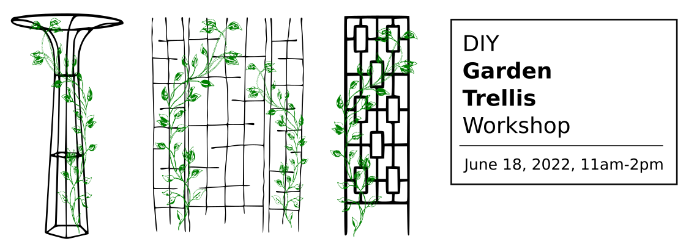

Don't be jealous -- make a trellis!



Family friendly -- Pay what you can -- Suggested donation $75
Between the pandemic gardening boom and rising food prices, gardening is more popular than ever. Every garden needs a trellis for climbing plants! Great for crops like tomatoes, beans, peas, or use it for ornamentals!
Cut and bend steel bar into whatever shapes you dream up – Trellises can be any shape or size, limited only by the materials and your imagination!
If you'd like to join us, please RSVP below!